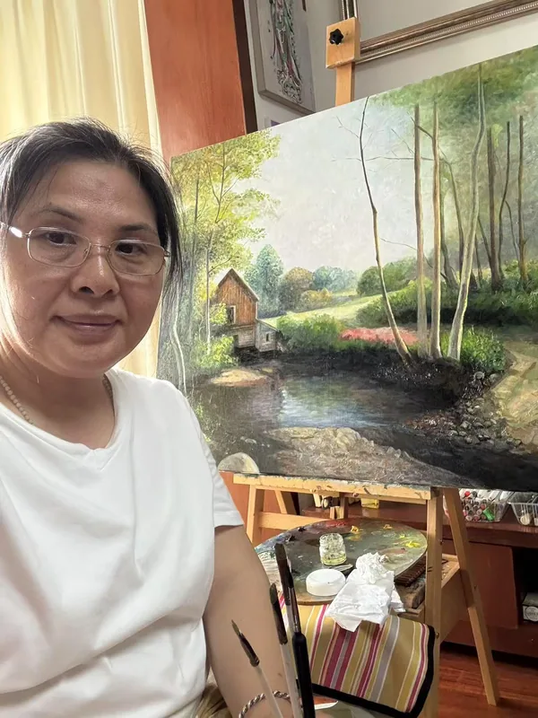

01 / BIOGRAPHY
以画为伴
蒋巧艳出生于湖南衡阳，自幼喜爱绘画，17岁离开家乡求学。1997年毕业于北京东方文化艺术学院油画系，此后留在北京从事油画创作，并经营文全油画工作室。在二十余年的工作室实践中，她持续创作，作品获得国内外专家与收藏家的认可。
2009至2014年，她每年参加纽约艺术博览会，作品多次被收藏。2011至2018年，她在纽约进修英语，继续学习艺术创作，并参与当地展览。2018年起，她在纽约皇后画院教授素描、色彩与创作。2021年5月底，因思念家乡，她从纽约回到衡阳。
纽约的博物馆、画廊、音乐、舞蹈与街头艺术，为她带来持续的滋养。来自不同文化的艺术表达，也成为她观察生活、理解绘画的重要经历。
02 / THE JOURNEY
一路走来
衡阳 · 北京 · 纽约 · 衡阳
- 1997
毕业于北京东方文化艺术学院油画系；此后留京创作并经营文全油画工作室。
- 2009–2014
每年参加纽约艺术博览会，作品多次被收藏。
- 2011–2018
在纽约进修英语，继续学习艺术创作。
- 2017
巧艳艺术工作室在纽约法拉盛文化中心举办画展。
- 2018
应皇后画院发起人刘先生邀请，在纽约皇后画院教授色彩、素描与创作。
- 2018–2019
连续两年参加纽约 Ceres 画廊“Ceres 的朋友们”联展，以及法拉盛文化中心会员展。
- 2021.05
5月底离开纽约，回到故乡衡阳。
03 / A LIVING ARCHIVE
画布之外
作品被观看、被收藏，也走进更多人的生活。
展览与交流
01


收藏记录
02


媒体记录
03

04 / WORKS & COMMISSIONS
艺术源于生活， 也走进生活。
提供原创油画、水彩作品，以及油画、水彩、肖像和插画定制。欢迎联系，交流作品收藏与创作需求。